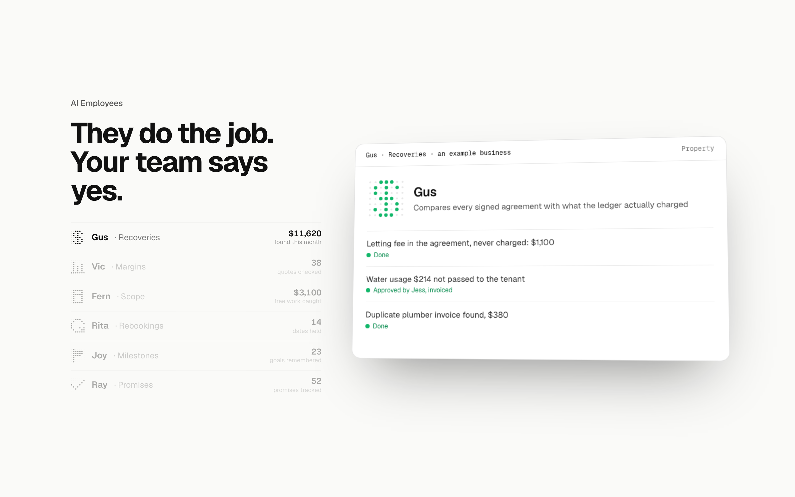
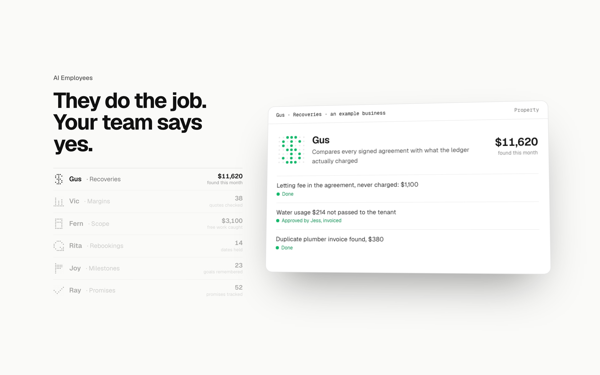
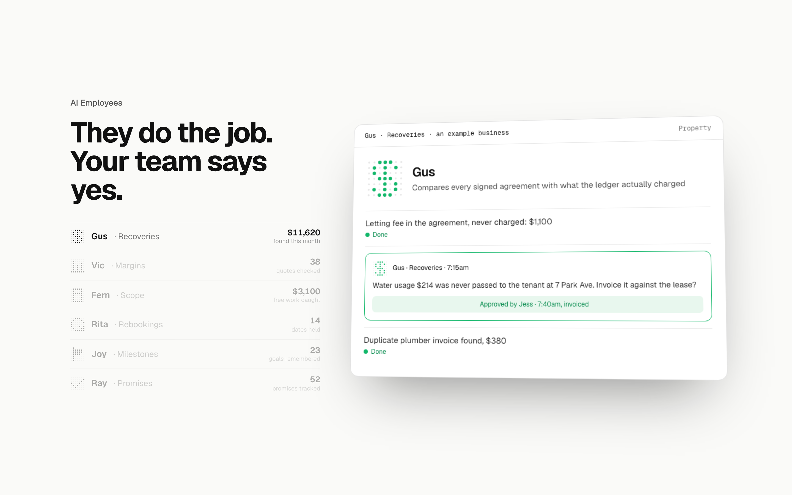

AI Employees: the card three ways
Detail 3 of 5. The scene with your heading and the scoreboard list in place, Gus’s day finished; only the card changes. Each option plays the same way as today (the lines arrive, the cursor presses Approve, the avatar goes green).
TodayName, the job in a sentence, three lines with their stateThe card as built: the bar, the avatar, the name and the one-line job, the day’s three lines each with a state line, the Approve button on the one that needed a person.

1. TimestampsEach line carries its timeThe three lines get a time at the right in mono, so the day reads as a day (7:02, 7:15, 9:30) and the gap between the job and the person’s yes is visible. Recommended.
2. The counter on the cardThe month’s figure at the top right, counting upThe scoreboard’s figure for this employee sits on the card and counts up as the lines land, so the list and the card say the same number.

3. The approval as a cardThe line that needed a person becomes a small approval cardThe wait line opens into the approval card the Operating Systems screens use (what it wants to do, Approve, then Approved by Jess), so the human step is the biggest thing on the card.
